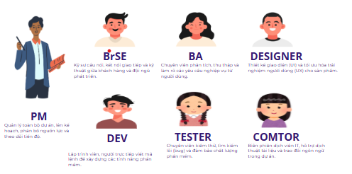
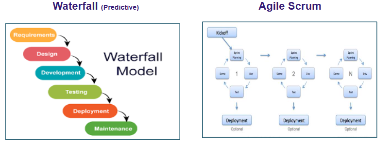
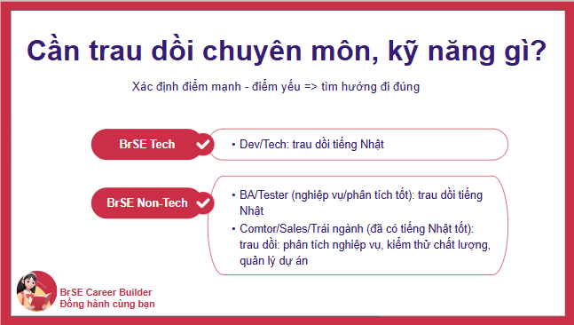

Hiểu Ngành IT & BrSE
Từ Góc Nhìn Thực Tế
Bài học nền tảng dành cho người chưa có kinh nghiệm IT"
BrSE Career Builder - Đồng Hành Cùng Bạn
Level 0 xây dựng nền nhận thức đúng về ngành IT và nghề BrSE - không phải để học thuộc định nghĩa, mà để bạn có bức tranh tổng thể, hiểu mình đang ở đâu, và biết mình cần đi theo hướng nào.
Phần lớn người mới bước vào ngành IT đều mang theo một nỗi sợ không có tên: "IT phức tạp, phải biết code, mình không đủ năng lực." Module này giải quyết nhận thức đó trước khi học bất cứ điều gì khác.
Khi nói đến IT, hầu hết mọi người hình dung ngay đến developer - người ngồi viết code. Đây là nhận thức phổ biến nhưng chưa đầy đủ. Trên thực tế, trong một dự án phần mềm điển hình, developer chỉ chiếm một phần nhân lực. Phần còn lại là các vai trò không cần code mà vẫn đóng vai trò quyết định đến chất lượng sản phẩm.
Nhiều người học tiếng Nhật cho rằng con đường duy nhất trong ngành IT là làm phiên dịch (Comtor). Trên thực tế, tiếng Nhật tốt kết hợp với kỹ năng giao tiếp là lợi thế cạnh tranh mở ra nhiều vai trò khác nhau - từ phân tích nghiệp vụ, quản lý dự án, đến tư vấn kinh doanh. Đặc thù của thị trường outsource Nhật–Việt là nhân lực "vừa biết IT, vừa có tiếng Nhật" luôn khan hiếm và được trả công xứng đáng.
Dưới đây là các vai trò thường gặp trong dự án phát triển phần mềm outsource Nhật–Việt. Tùy công ty và tùy dự án, sẽ có thêm các vai trò như PO, designer, v.v...Bạn không cần ghi nhớ hết ngay - mục tiêu là nắm được bức tranh tổng thể và định vị được vị trí của BrSE trong đó.

Để làm tốt vai trò BrSE, bạn cần hiểu quy trình phát triển phần mềm không phải ở mức lý thuyết học thuật - mà ở mức đủ để biết mình đang ở giai đoạn nào, cần làm gì, và phối hợp với ai.
Mỗi dự án phần mềm trải qua 4 giai đoạn lớn. Upstream (上流) = phân tích & thiết kế cơ bản. Downstream (下流) = thiết kế chi tiết trở đi đến release.

📉 Waterfall
Thực hiện tuần tự từng giai đoạn. Hoàn thành Upstream rồi mới sang Coding, xong Coding mới Test. Phổ biến trong dự án Nhật truyền thống. Ưu điểm: kế hoạch rõ ràng, tài liệu đầy đủ. Nhược điểm: khó thay đổi yêu cầu giữa chừng.
🔄 Agile (Scrum)
Phát triển theo vòng lặp ngắn gọi là Sprint (thường 1–2 tuần). Mỗi Sprint hoàn thành một nhóm chức năng nhỏ. Ưu điểm: linh hoạt, dễ thích nghi khi yêu cầu thay đổi. Nhược điểm: cần team mạnh và khách hàng chủ động.
Trong thị trường outsource Nhật–Việt, hai kiểu dự án phổ biến nhất là Labo và Project Base. Hiểu sự khác nhau giữa hai kiểu này giúp bạn định hướng công việc và kỳ vọng đúng hơn.
| Tiêu chí | Project Base | Labo |
|---|---|---|
| Thời gian | Có điểm đầu và điểm kết thúc rõ ràng | Khách hàng thuê effort cố định trong một khoảng thời gian dài |
| Nội dung | Xây dựng hệ thống mới từ đầu theo scope đã thỏa thuận | Maintain, phát triển thêm chức năng, fix bug, điều tra issue |
| Mô hình | Thường dùng Waterfall hoặc kết hợp | Thường dùng Agile/Scrum hoặc Kanban |
| BrSE làm gì | Tham gia từ đầu: phân tích yêu cầu, tạo tài liệu, theo dõi từng giai đoạn | Tiếp nhận task từ backlog (JIRA/Backlog), làm rõ yêu cầu từng task, đẩy về team dev, test và giao hàng liên tục |
Module này đi sâu vào bản chất công việc của BrSE - không phải định nghĩa học thuật, mà là những gì diễn ra thực tế trong một ngày làm việc, trong một dự án cụ thể, với team người thật.
BrSE - viết tắt của Bridge System Engineer - là người làm cầu nối giữa khách hàng Nhật Bản và team phát triển phần mềm tại Việt Nam. Vai trò này đòi hỏi tiếng Nhật giao tiếp tốt và hiểu biết về quy trình phát triển phần mềm.
⚙️ BrSE Tech
Xuất phát từ Developer hoặc có nền tảng kỹ thuật mạnh. Tham gia được cả Upstream lẫn Downstream. Có thể coding, review code, tạo tài liệu kỹ thuật (Basic Design, Detail Design, API Design, DB Design). Lợi thế: hiểu sâu kỹ thuật, làm việc độc lập cao.
🔗 BrSE Non-tech
Xuất phát từ Comtor, BA, Tester, hoặc trái ngành với tiếng Nhật tốt. Không code nhưng phải hiểu sâu về quy trình, phân tích nghiệp vụ, kiểm soát chất lượng. Dùng AI để tăng năng lực kỹ thuật. Lợi thế: giao tiếp tốt, nhạy bén với yêu cầu nghiệp vụ.
Điểm đến của cả hai
Đảm bảo hiểu đúng yêu cầu khách hàng trong suốt quá trình làm việc & đảm bảo chất lượng sản phẩm khi bàn giaoBrSE không có một quy trình làm việc cố định theo từng giờ - công việc phụ thuộc vào giai đoạn dự án và tình huống phát sinh. Tuy nhiên, có những nhóm đầu việc xuất hiện thường xuyên trong gần như mọi dự án.
| Nhóm công việc | Nội dung cụ thể | Tần suất |
|---|---|---|
| Họp & giao tiếp với khách Nhật | All meetings: Requirement meeting, confirm/Q&A meeting, weekly meeting, demo sản phẩm. Book meeting, chuẩn bị agenda, record, viết meeting note sau họp. | Hàng ngày / hàng tuần |
| Tiếp nhận & làm rõ yêu cầu | Nhận task/yêu cầu từ khách, làm rõ các điểm mơ hồ, viết lại yêu cầu bằng tiếng Việt và transfer cho team dev. | Thường xuyên |
| Theo dõi tiến độ | Check tiến độ dev/tester hàng ngày, đảm bảo chạy theo plan. Daily report qua chat (Slack/Teams/Skype). Weekly report bằng file báo cáo. | Hàng ngày |
| Kiểm soát chất lượng | Test các case cơ bản (normal case) và một số abnormal case trước khi giao hàng. Đảm bảo sản phẩm chạy đúng yêu cầu. | Trước mỗi lần giao hàng |
| Tạo tài liệu | Specs,meeting minutes, weekly report, function list, screen list, basic design, QA document. Tài liệu phải logic, rõ ràng, có evidence. | Thường xuyên |
Nhu cầu gốc của thị trường là: một người vừa giỏi kỹ thuật, vừa giao tiếp tiếng Nhật tốt. Nhưng thực tế, nhân lực vừa code giỏi vừa tiếng Nhật tốt rất khan hiếm. Cung thấp hơn cầu đáng kể.
Do đó, thị trường linh hoạt: với những dự án cần người hiểu nghiệp vụ khách hàng, đảm bảo giao tiếp và chất lượng - BrSE non-tech đáp ứng được hoàn toàn. Và thực tế có nhiều BrSE không xuất thân từ code nhưng được đánh giá rất cao nhờ tiếng Nhật tốt và năng lực phân tích nghiệp vụ.
Biết đích đến chưa đủ - bạn cần biết xuất phát từ đâu, đi theo con đường nào, và học gì để không bị "đi vòng" như nhiều người đã từng trải qua.
Không có một con đường duy nhất để trở thành BrSE. Tùy xuất phát điểm, mỗi người có lộ trình khác nhau - nhưng đều có thể đến cùng một đích.
| Xuất phát điểm | Lợi thế sẵn có | Cần bổ sung | Chiến lược |
|---|---|---|---|
| Comtor IT | Tiếng Nhật tốt, đã quen môi trường dự án, hiểu văn hóa làm việc Nhật | Phân tích nghiệp vụ (BA), kiểm soát chất lượng cơ bản, kiến thức về quy trình phát triển | Tập trung học BA và QA. Xin chủ động tham gia vào các giai đoạn Upstream và test để tích lũy kinh nghiệm thực tế. |
| BA / Tester | Hiểu quy trình phát triển, có kỹ năng phân tích và kiểm thử | Tiếng Nhật giao tiếp, khả năng hosting meeting với khách Nhật | Đầu tư mạnh vào tiếng Nhật giao tiếp chuyên ngành. Tích cực tham gia meeting để tích lũy kinh nghiệm giao tiếp trực tiếp với khách. |
| Trái ngành / Fresher | Tiếng Nhật N2+ giao tiếp tốt (nếu có), không bị "lệch" kiến thức từ ngành cũ | Hiểu cơ bản về phát triển phần mềm, quy trình, vai trò, công cụ làm việc | Vào công ty IT trước - vị trí nào cũng được. Tester, học việc, Comtor… Môi trường thực tế là nơi học nhanh nhất. Xây dựng nền tảng từ trong công việc thực. |
Một trong những vấn đề lớn nhất khi tự học là không biết dừng ở đâu - học quá sâu vào những thứ không cần thiết, hoặc bỏ qua những thứ quan trọng. Dưới đây là bản đồ kỹ năng thực tế, không phải lý thuyết sách vở.

| Nhóm kỹ năng | Cần học đến mức nào | Ưu tiên |
|---|---|---|
| Tiếng Nhật giao tiếp IT | Giao tiếp meeting, hearing yêu cầu, giải thích vấn đề. Từ vựng chuyên ngành IT cơ bản. Đọc/viết email, báo cáo bằng tiếng Nhật. | Cao |
| Phân tích nghiệp vụ (BA) | Đọc hiểu tài liệu đặc tả, viết function list, screen list, làm rõ yêu cầu. Không cần đến mức viết detail design kỹ thuật. | Cơ bản |
| Kiểm soát chất lượng (QA/Test) | Test case cơ bản (normal case, một số abnormal case). Không cần test chi tiết như tester chuyên nghiệp. | Cơ bản |
| Quản lý tiến độ | Sử dụng JIRA/Backlog, lập weekly report, follow tiến độ team. Không cần làm Master Schedule phức tạp nếu đã có PM riêng. | Cơ bản |
- Lập trình / viết code (trừ khi bạn muốn phát triển thành BrSE tech)
- Kiến trúc hệ thống kỹ thuật chuyên sâu (microservices, cloud architecture…)
- Detail Design ở mức kỹ thuật (API design, DB schema design chi tiết)
- DevOps, CI/CD pipeline
Khóa học được thiết kế theo cấp độ tăng dần. Mỗi level xây dựng trên nền của level trước:
Nền tảng nhận thức → ★★ Level 1
Kỹ năng thực chiến cơ bản → ★★★ Level 2
Xử lý công việc độc lập → ★★★★ Level 3
Senior BrSE
Level 0 không yêu cầu bạn ghi nhớ từng chi tiết kỹ thuật. Mục tiêu là bạn nhìn thấy được bức tranh tổng thể - ngành IT rộng hơn bạn nghĩ, BrSE là vai trò có thể tiếp cận được mà không cần biết code, và có một lộ trình rõ ràng để đi từ điểm bạn đang đứng đến nơi bạn muốn đến.